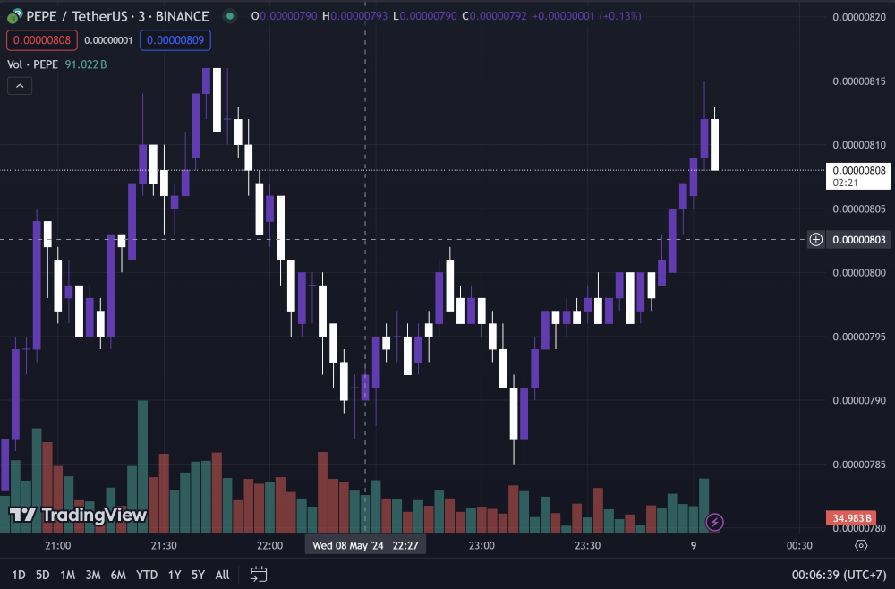

Price Prediction: PEPE Coin
When investors flocked to purchase the meme coin, the price of Pepe shot up more than 5% in the last 24 hours, trading at $0.000006818 as of 7:05 a.m. EST. The most recent price spike for PEPE is the result of trading for PEPE perpetual futures contracts being available on Coinbase, a U.S.-based cryptocurrency exchange, today. PEPE is now the third-largest meme coin by market capitalization, surpassing Dogwifhat (WIF) in the wake of the price spike. WIF's tenure among the top three meme currencies was brief—it had barely surpassed PEPE on March 29.
Pepe's price surged by almost 5% in the previous day as buyers hurried to buy the meme coin; as of 7:05 a.m. EST, it was trading at $0.000006818.
The fact that trading for PEPE perpetual futures contracts is now possible on Coinbase, a cryptocurrency exchange based in the United States, is what caused the most recent price increase for PEPE. Following the price increase, PEPE has surpassed Dogwifhat (WIF) to become the third-largest meme coin by market capitalization.
WIF's time as one of the top three meme currencies was short-lived; on March 29, it had just barely eclipsed PEPE. PEPE's 4-hour chart's technical indications imply that a correction in the cryptocurrency may be imminent. The Relative Strength Index (RSI) and the Moving Average Convergence Divergence (MACD) indicators both indicate waning purchase pressure even if they are both modestly optimistic
On the 4-hour chart, the MACD line is bending in the direction of the MACD Signal line. This technical event is typically interpreted by traders as an indication that the positive momentum in a cryptocurrency is about to end.
In the next day or so, the crossover of these two lines would indicate that PEPE has entered a bearish cycle. In the meantime, purchasers are becoming weaker in the face of vendors. Bulls overtook bears within the last 48 hours, as evidenced by the 4-hour RSI breaking above its Simple Moving Average (SMA) line. Given that the RSI is presently moving in the direction of the SMA, this advantage appears to be waning.
The possibility that PEPE's positive momentum is coming to an end could indicate that investors are moving their money to other smaller meme coins that have more room to develop.
A meme coin that has attracted a lot of interest from investors is Dogeverse, a multi-chain derivative of Dogecoin that is about to raise $10 million through its presale.
Sumber : https://coinmarketcap.com